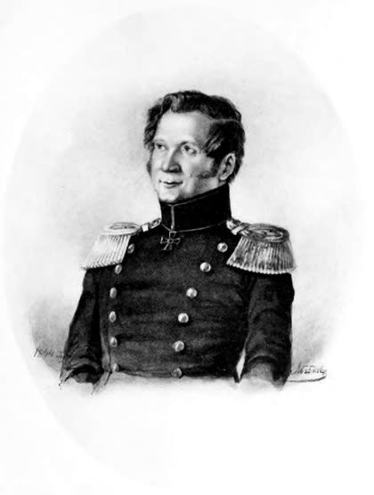
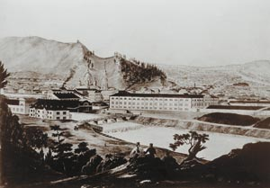

Узор, который оказался строением стали
Читается подряд. Нажми на удар — откроется подробный разбор с источниками.
Европа веками покупала булатные клинки на Востоке и не умела их повторить: за лучший клинок в Азии платили по сто и больше червонцев.Узнать подробнееСвернуть
Родина булата — Индия: оттуда вывозили слитки-«хлебцы» вуца, около 12,5 см в поперечнике и около 900 граммов весом. Слиток разрубали пополам, чтобы покупатель видел строение металла.
В 1779 году в Париже докладчик Общества поощрения национальной промышленности признал: европейцы «в конце концов оказались вынужденными получать все булатные клинки с востока».
Сам Аносов писал: «Азиатцы… охотно платят за лучшие клинки по 100 и более червонцев».
ПреданиеРассказ о том, как Саладин булатом разрезал в воздухе шёлковый платок, — легенда, а не документ. Её пересказывают, чтобы объяснить славу булата.
Источник: С. В. Истомин, «Самые знаменитые изобретатели России», 2000 (текст в библиотеке ИРНИТУ).
Над секретом булата бились лучшие учёные Европы, среди них Майкл Фарадей, — и тайна не поддалась.Узнать подробнееСвернуть
Булат изучали французы Клуэ, Бреан, Бертье, англичане Стодарт и Фарадей. Швед Ринман считал, что узор получается только сваркой стали и железа разной твёрдости. Бертье принимал за булат хромистую сталь.
Даже имитация, похожая на булат лишь внешне, тогда считалась серьёзным достижением.
Источник: С. В. Истомин, 2000.
Рано осиротевший мальчик попал в Горный кадетский корпус, а к тридцати годам уже управлял Златоустовской оружейной фабрикой.Узнать подробнееСвернуть

П. П. Аносов. Портрет работы Е. С. Абабкова, 1844. Воспроизведён в «Горном журнале», 1914. Общественное достояние. Павел Петрович Аносов родился 29 июня 1796 года в Твери (так у Президентской библиотеки; в других биографиях — 1797 год и Петербург). Рано осиротев, рос в семье родственника. В 1810 году его определили в Горный кадетский корпус.
В 1817 году он приехал на Златоустовский казённый завод техником для поручений, в 1819-м стал смотрителем отделения «украшенного оружия», в декабре 1821-го — помощником управляющего, в ноябре 1824-го — управляющим оружейной фабрикой.
Источники: Президентская библиотека имени Б. Н. Ельцина; С. В. Истомин, 2000.
Немецкий тигель стоил 25 рублей золотом — Аносов слепил свой из уральской глины с толчёным углём за 40–50 копеек.Узнать подробнееСвернуть
Находка дняТигель — глиняный сосуд, в котором плавят сталь. Считалось, что хорошие тигли умеют делать только за границей. Аносов взял местную огнеупорную глину, смешал с мелко истолчённым древесным углём, высушил и обжёг. Его тигли выдерживали плавку стали и золота и обходились примерно в пятьдесят раз дешевле привозных.
Дешёвые тигли и позволили ставить опыты сотнями: без них десятилетний поиск булата разорил бы завод.
Источник: С. В. Истомин, 2000.
В 1831 году он первым в мире положил сталь под микроскоп — англичанин Генри Сорби сделает это только через три десятилетия.Узнать подробнееСвернуть
О микроскопе 1831 года Аносов сам пишет в книге «О булатах». С этого начался микроскопический анализ металлов — сегодня без него не выпускают ни рельсы, ни турбинные лопатки.
Честь начала металлографии долго отдавали Сорби, который взялся за микроисследования стали в 1860-х. Граница нашего первенства узкая и точная: не булат, а метод — первое исследование строения стали под микроскопом.
Источники: Президентская библиотека («первый применил для исследования стали микроскоп»); С. В. Истомин, 2000.
Он доказал: узор булата — не рисунок кузнеца, а видимое глазу строение самого металла.Узнать подробнееСвернуть
Аносов разделил булаты на настоящие и ложные. Ложный — узор наведён на поверхность рисовкой и травлением. Сварочный — узор внутри, но получен многократной сваркой полос. Настоящий — узор рождается при плавке и остывании и после каждой полировки проявляется снова.
Строение, писал он, зависит от состава, способа плавки, условий затвердевания и ковки. Для самых прочных клинков он назвал лучшими сетчатый и коленчатый узор.
Источник: П. П. Аносов, «О булатах», 1841, по изложению С. В. Истомина, 2000.
Больше десяти лет опытов: кремний, марганец, хром, титан, золото, платина и даже алмаз — всё шло в тигель.Узнать подробнееСвернуть
Опыты начались в 1828 году. Приложение к книге описывает плавки 1828–1839 годов. Своё дело Аносов сравнивал с «океаном, который надлежало переплывать многие годы, не приставая к берегу».
Лучшей присадкой для получения углеродистой булатной стали он признал графит.
Источники: Президентская библиотека (начало опытов — 1828); С. В. Истомин, 2000; Златоустовская ЦБС, «Научное исследование П. П. Аносовым булатной стали».
В 1838 году он выковал первый клинок русского булата — и перестал называть сталь азиатскими именами.Узнать подробнееСвернуть
Аносов отказался от старых названий «вуц», «табан», «кара-табан», «шам» и ввёл своё — «русский булат». По виду он делил его на полосатый, струистый, волнистый, сетчатый и коленчатый.
Златоустовские мастера выковывали из булата сабли и кинжалы. Кинжал 1840 года на обложке этой страницы — из той самой стали.
Источники: Президентская библиотека (первый булатный клинок — 1838); С. В. Истомин, 2000; Военно-исторический музей артиллерии — предмет на обложке.
Секрет он не спрятал: в 1841 году напечатал всё, от сорта угля до медленного остывания тигля, — книгу сразу перевели на немецкий и французский.Узнать подробнееСвернуть
Десять условий «совершенного булата» по Аносову: лучший уголь, «как, например, чистый сосновый»; печь из самых огнеупорных кирпичей; тигли без трещин; лучшее железо; чистый самородный графит; пожжённый кварц или доломит; сильнейший жар; наибольшее время плавления; медленное охлаждение тигля; наименьшее нагревание при ковке.
Три из них ты проверишь сам в тигле ниже.
Источник: П. П. Аносов, «О булатах», 1841, цитата по С. В. Истомину, 2000.
Отдельный запрет его инструкции — перегреть булат при ковке: от лишнего жара узор теряется.Узнать подробнееСвернуть
Аносов требовал, чтобы при проковке «ни один нагрев не был оставлен без внимания и точного доведения до степени жара, при которой узор теряется». Рецепт был не только в тигле, но и в руке кузнеца.
Источник: П. П. Аносов, «О булатах», 1841, цитата по С. В. Истомину, 2000.
Попутно он первым в России применил газовую цементацию: насыщал сталь углеродом из печных газов, без засыпки углём.Узнать подробнееСвернуть
Веками считалось, что для науглероживания железо должно касаться угля. Аносов показал, что печные газы с большим содержанием углерода делают это не хуже. Позже этот приём разошёлся по машиностроительным заводам.

Златоустовский завод с горы Косотур. Гравюра середины XIX века. Общественное достояние. Источник: С. В. Истомин, 2000. Истомин пишет «впервые в мире»; второго независимого источника под мировую границу у нас нет, поэтому на странице — «первым в России».
Генерала-металлурга свалил буран: возок опрокинулся, и Аносов часами пролежал в снегу под адъютантом и чемоданами.Узнать подробнееСвернуть
В 1847 году Аносова назначили начальником Алтайских заводов, затем томским гражданским губернатором. В начале 1851 года он ехал из Томска в Омск встречать сенатора Анненкова и не доехал восемнадцати вёрст.
Дочь, Лариса Павловна, вспоминала: возок наехал на сугроб и опрокинулся, Аносов выпал, сверху упали адъютант и чемоданы. Их нашли через несколько часов. Вскоре начались нарывы в горле. Павел Петрович Аносов умер в Омске 13 (25) мая 1851 года.
Источник: воспоминания Л. П. Аносовой по книге С. В. Истомина, 2000; некролог в «Санкт-Петербургских ведомостях», 1851.